|
MonALISA Performance Test
Perform high rate SNMP queries on a large farm (500 nodes)
MonALISA version : 0.2 , java virtual machine 1.4 beta SUN
The monitoring service run on Dell 8100 ( Pentium ||| @ 1 GHz ) laptop connected to LAN at 10Mbps
running linux (RH 7.2)The same system runs the embedded (InstantDB) data base to store the collected values
Date: 26 August 02 / CERN
We monitored the lxbatch farm at CERN (500 nodes) performing two snmp requests every 30 s for each node.
This setup is somehow equivalent with monitoring 1000 nodes every 30s and collecting 15 values.
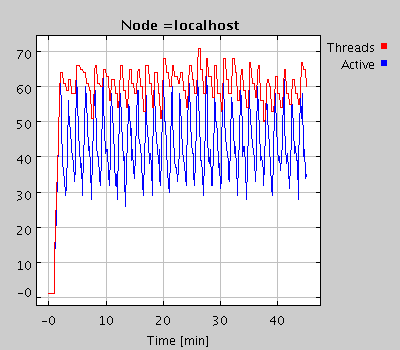
The total number of threads (created -red and active - blue ) to perform these measurements.
A mean of ~45 active threads were used to perform ~ 30 snmpwalk requests per second . Each snmp request returned 15 metrics values.
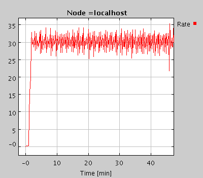
The rate for performing monitoring tasks (in this case snmp requests).
A rate of ~ 30 tasks per second corresponds to ~ 450 metrics values
collected per second. This information was stored in a relational data base embed
and running in the same JVM.
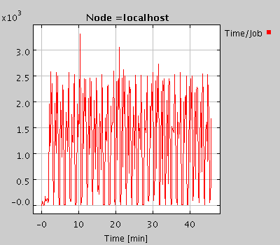
The mean time to perform a task.
The mean time for performing such an snmp request was ~1.3 s.
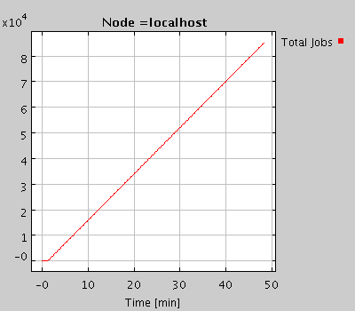
The total no. of tasks performed in time.
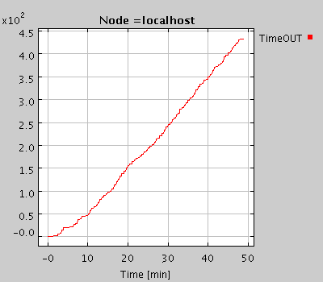
Around 5% of the tasks had to be stop due to a time-out limit. This is perhaps related with the poor connectivity between the system running MonALISA and the farm (please see the next plots).
The mean time for performing such an snmp request was ~1.3 s.

The IO traffic on the system running the MonALISA service.
The in and out traffic from the system running MonALISA is measured in Kb/s.
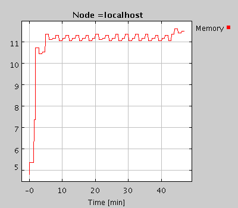
The memory (MB) used by the MonALISA service including (DB, WebServices, Jini service and the thread engine).
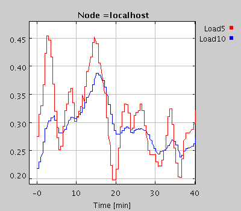
The Load on the system running MonALISA service.
Despite the large number of concurrent threads for collecting and storing data the load of the system running MonALISA is quite low.
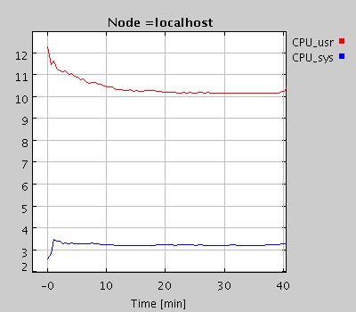
The CPU usage in % (user and system) to run this configuration.
In fact the load in linux is over evaluated for multi-thread applications.
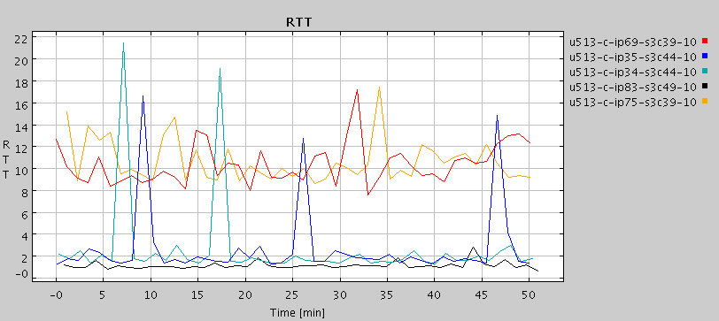
The RRT (in ms) between the system running MonaLisa and the five major switches serving the LXBATCH farm.
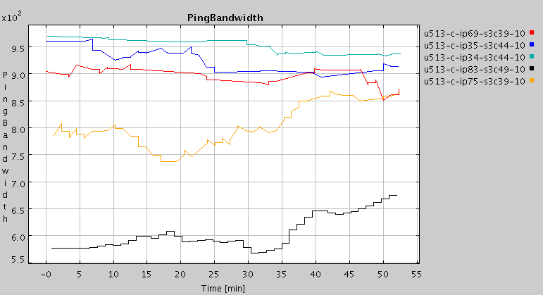
The estimated bandwidth in KB/s (using a simple procedure based on ping) from the node running MonALISA and these switches.
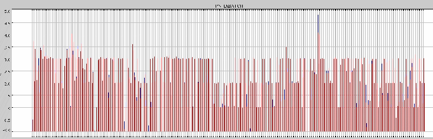
At the same time the farm was running at a relative high load (mean ~2.6).
Here it is shown the distribution for all the nodes in the farm.
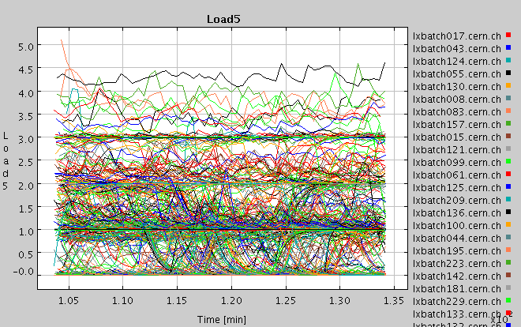
The time evolution of the load.
|